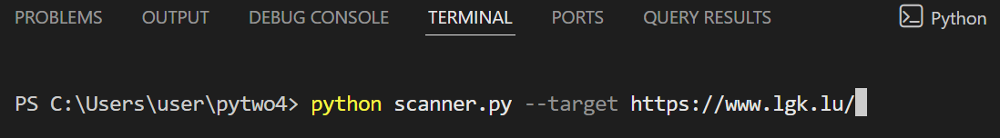
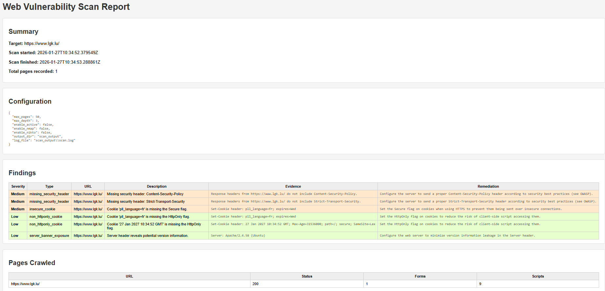

Hands on technical projects focused on web security, vulnerability analysis, and real world attack surface discovery.


Build a lightweight web scanner to identify common security misconfigurations and potential vulnerabilities.